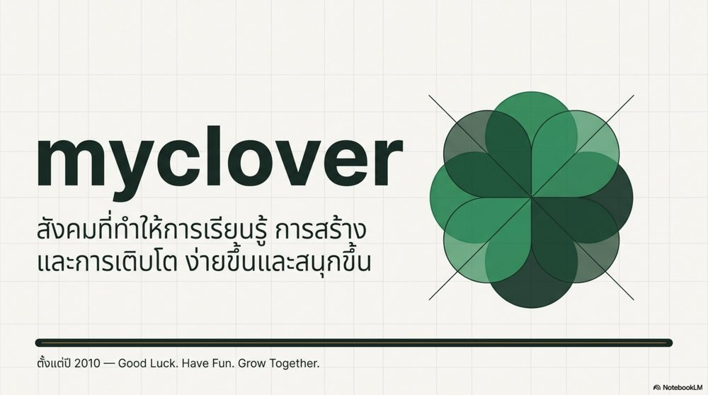
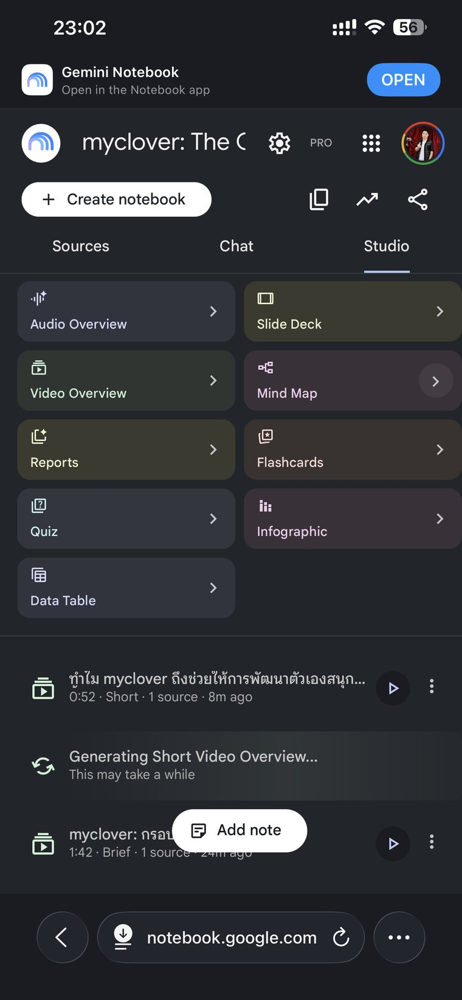

ซอสขวดเดียว แตกได้หลายเมนู
วันนี้ไม่ต้องทำ Source ใหม่ ไม่ต้องเริ่ม Prompt ใหม่ทุกชิ้น เอาซอสขวดเดิมเข้าไปในครัว แล้วกดเลือกว่าจะเสิร์ฟเป็นภาพ สไลด์ วิดีโอ เสียง Mind Map หรือแบบทดสอบ
ใช้ Source 1 ขวด สร้างอย่างน้อย 3 Output
เครื่องมืออะไรก็ได้ที่อ่าน Source แล้วแตกงานต่อได้ วันนี้ใช้ NotebookLM เป็นครัวตัวอย่าง เพราะเริ่มง่าย มี Standard ให้ลองฟรี และมีเมนูสำเร็จรูปหลายแบบให้กดใช้
รูปแบบเปลี่ยนได้ตามคนรับ แต่ข้อเท็จจริง Key Messages และ Canon คือรายละเอียดที่ตัดสินใจแล้วและต้องคงเดิมทุก Output เช่น ชื่อ สี ยุค บุคลิก ข้อความหลัก และสิ่งที่ห้ามเปลี่ยน รูปแบบการเล่าเปลี่ยนได้ แต่แกนนี้ห้ามเพี้ยน ต้องกลับไปหา Source ขวดเดียวกันได้
1ครัววันนี้ชื่อ NotebookLM
✨ ปุ่มมหัศจรรย์มีจริง แต่ไม่ได้อ่านใจเรา
NotebookLM คือครัวตัวอย่างจาก Google ที่ใช้ความสามารถ Gemini อ่าน Source แล้วแปลงเป็นรูปแบบต่าง ๆ เมนูที่เห็นอาจต่างตามบัญชี อุปกรณ์ ภาษา และเวอร์ชัน แต่หลักเหมือนเดิม: ใส่ Source → เลือก Output → เติมผง → ชิมก่อนเสิร์ฟ
ปุ่มมหัศจรรย์กดแล้วงานออกจริงค่ะ แต่ถ้า Source ยังมั่ว ปุ่มนี้จะช่วยทำให้ความมั่วออกมาสวยขึ้น เร็วขึ้น และมีหลาย Format ขึ้นเท่านั้นเองค่ะ
2วงจร 5 จังหวะ ห้ามข้ามชิม
3เลือก Source ที่จะเอาเข้าครัว
ใช้ซอสของตัวเอง
หยิบ Source จากบท 1 ที่ผ่านการชิมในบท 2 แล้ว งานที่แตกออกมาจะมีตัวตนของคุณจริงที่สุด
วางเป็น Copied text
ใช้เมื่อแอปหรืออุปกรณ์ไม่รับ .md ก๊อปข้อความทั้งก้อนแล้ววางแทนได้
ใช้ Source ต้นฉบับเดิม
ไฟล์ myclover / GLHF / GrowthOS ตัวเดิมที่สร้างภาพและสไลด์ตัวอย่างด้านล่าง
ดาวน์โหลดไม่ได้หรือแอปไม่รับ .md ไม่เป็นไร กดคัดลอกแล้วเลือก Copied text ได้เลย
📱 Browser กับ App ใส่ Source ไม่เหมือนกันทางออกสำหรับคนที่หาเมนูอัปโหลด `.md` ไม่เจอ
Browser: สร้าง Notebook → เพิ่ม Source → อัปโหลดไฟล์หรือเลือก Source ที่รองรับ
App: ถ้าไม่เห็นไฟล์ .md ให้กดคัดลอกด้านบน แล้วเพิ่มเป็น Copied text
อย่ายึดติดกับชื่อปุ่ม เป้าหมายคือให้ข้อความ Source ชุดเดียวกันเข้า Notebook ครบ
🔎 ผ่าไฟล์ `.md` ดูว่าทำไมแตกงานได้Key Messages, Tone และ Canon ที่คุมรสทุกเมนู
หัวข้อ: บอกลำดับและความสัมพันธ์
Key Messages: ประโยคที่ห้ามเพี้ยน
Tone: น้ำเสียงที่ทุก Output ใช้ร่วมกัน
Canon / ข้อห้าม: สิ่งที่ต้องคงเดิมและห้ามเติมเอง
4ฉีกซองผงปรุงรส แล้วเทลงช่อง Prompt
🖼️ ผง Infographic
เห็นเรื่องยากในภาพเดียว
📊 ผง Slide Deck
เอาไปคุยกับทีม สอน หรือนำเสนอ
🎬 ผง Video Overview
เล่าให้คนที่ไม่เคยรู้เรื่องตามทัน
🎧 ผง Audio Overview
ฟังได้ระหว่างเดินทางหรือทำงาน
🧠 ผง Mind Map
เห็นว่าของทุกส่วนต่อกันอย่างไร
❓ ผง Quiz
เช็กว่าเข้าใจจริงหรือแค่พยักหน้า
ใช้ผงคนละซองไม่เป็นไรค่ะ แต่ถ้า Infographic บอกอย่างหนึ่ง Slide บอกอีกอย่าง และเสียงสรุปคิดพล็อตเพิ่มเอง เชฟขอเรียกว่าโต๊ะบุฟเฟต์ข่าวลือค่ะ ไม่ใช่การแตกเมนู
5ของจริงจาก Source ต้นฉบับขวดเดียว
ตัวอย่างเดิมทั้งหมดสร้างจากไฟล์ myclover / GLHF / GrowthOS ชุดเดียว สิ่งที่เปลี่ยนคือคนรับและวิธีเล่า ไม่ใช่ข้อเท็จจริงต้นทาง

เก็บ Version แรกไว้ตามจริง รวมถึงจุดที่ AI เรียงเลขในวงจรผิด เพื่อสอนว่า Output สวยไม่ได้แปลว่าผ่านการชิม
⚠️ เปิดดูจานที่สวย แต่ข้อมูลพลาดกรณีจริงจากสไลด์ และวิธีแก้โดยไม่กระจายปัญหา
ในหน้าวงจร GrowthOS 7C ลำดับเลขถูกจัดไม่ตรง แม้หลายส่วนดูถูกต้อง จึงต้องชิมกับ Source ไม่ใช่ตัดสินจากความสวย
- ผิดเฉพาะชิ้น: แก้ Output นั้นและล็อกส่วนที่ผ่าน
- ผิดเหมือนกันหลายชิ้น: กลับไปแก้ Source
- ข้อมูลถูกแต่ทำให้เข้าใจผิด: เปลี่ยนเมนูหรือผงให้เหมาะกับคนรับ
📱 มือถือเครื่องเดียวมี Studio ได้จริงไหมภาพเดิมและสิ่งที่ควรรู้ก่อนตามตำแหน่งปุ่มแบบเป๊ะ ๆ
ตัวอย่างเดิมสร้างจากมือถือได้ แต่เมนูอาจต่างตามบัญชี ภาษา อุปกรณ์ และการอัปเดต ให้หาแนวคิดเดียวกัน: Source อยู่ไหน เลือก Output ตรงไหน เติมคำสั่งตรงไหน และดาวน์โหลดตรงไหน

💼 Source แบบไหนแตกเป็นงานอะไรได้บ้างประชุม ธุรกิจ เรียน คอนเทนต์ และประสบการณ์ส่วนตัว
- ประชุม: บันทึก → สรุป, Action items, Slide, FAQ
- ธุรกิจ: แบรนด์ + ลูกค้า → Presentation, Onboarding, Script
- การเรียน: เอกสาร → Mind Map, Flashcards, Quiz, Audio
- คอนเทนต์: Research + Brand voice → คลิป, Caption, Visual
- ประสบการณ์: โน้ต + เสียง → คู่มือ, Checklist, Template
6ตรวจว่าแตกเมนู ไม่ได้แตกความจริง
🍽️ Multiplier Check
ติ๊กเมื่อทำและตรวจจริงแล้ว ไม่ใช่แค่เห็นปุ่มใน Studio
ทำ 12 เมนูจากซอสผิดขวดเดียวกัน ไม่ได้เรียกว่าขยายผลนะคะ เรียกว่ากระจายปัญหาได้มีประสิทธิภาพมากค่ะ กรุณาชิมก่อนเปิดสายพานค่ะ
🎯 เควสท้ายบท · เปิดโต๊ะจากซอส 1 ขวด
จบบทนี้ต้องเห็นว่า Source เดียวเปลี่ยนภาชนะได้ โดยไม่ต้องอธิบายตัวตนใหม่ทุกครั้ง
- ใช้ Source ของตัวเองหรือ Source ตัวอย่าง
- เพิ่มเข้า NotebookLM หรือเครื่องมือที่อ่าน Source ได้
- เลือกคนรับ 3 กลุ่มหรือ 3 สถานการณ์
- สร้าง Output อย่างน้อย 3 รูปแบบด้วยผงด้านบน
- เทียบ Key Messages, Tone และ Canon กับ Source
- เขียน Source Map สั้น ๆ ว่าแต่ละ Output เหมาะกับใคร